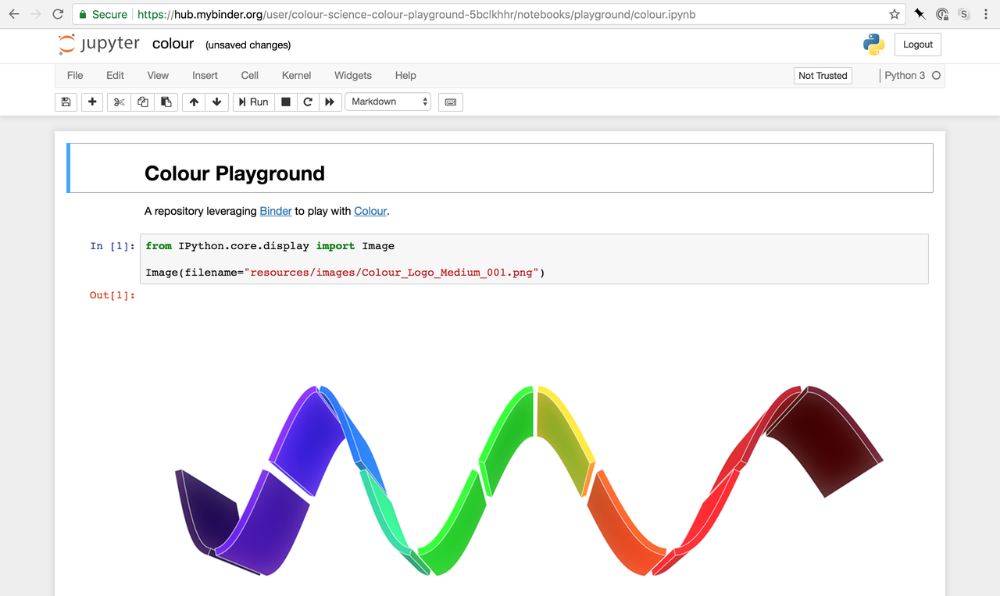
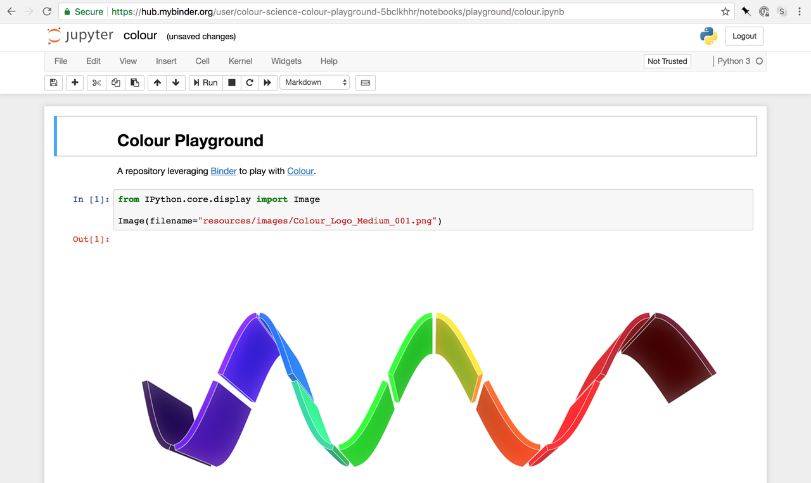

colour-playground
Colour - Playground various Jupyter playground notebooks for Colour.
They are interactive within Binder or viewable using Jupyter Nbviewer.
Colour - Playground various Jupyter playground notebooks for Colour.
They are interactive within Binder or viewable using Jupyter Nbviewer.